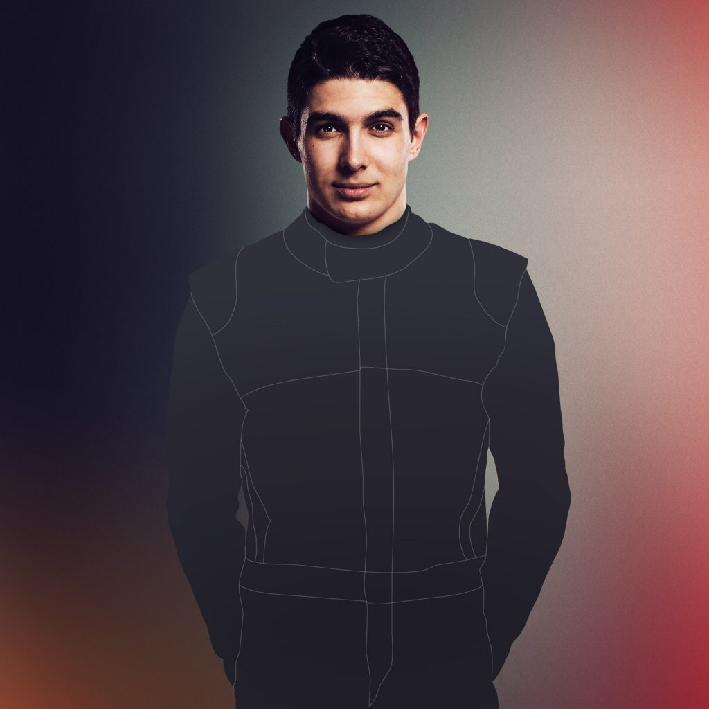

Renault
Renault
Daniel RICCIARDO - 3

Esteban OCON - 31
The French automotive manufacturer Renault has been associated with Formula One as both constructor and engine supplier for various periods since 1977. In 1977, the company entered Formula One as a constructor, introducing the turbo engine to Formula One in its first car, the Renault RS01. In 1983, Renault began supplying engines to other teams. Although the Renault team won races and competed for world titles, it withdrew at the end of 1985. Renault continued supplying engines to other teams until 1986, then again from 1989 to 1997 and at various other times since then until the present.
Renault returned to Formula One in 2000 when it acquired the Enstone-based Benetton Formula team (formerly Toleman). In 2002 Renault re-branded the team as Renault F1 Team and started to use Renault as their constructor name, winning both the Drivers' and Constructors' Championships in 2005 and 2006.
For the 2011 season the team competed under the name Lotus Renault GP but retained the Renault constructor name. In 2012, the team changed their constructor name to Lotus and operated as Lotus F1 Team until the end of 2015, when they returned to the control of Renault as a works manufacturer. For the 2019 season "Sport" was removed from the team's official title.
Renault has also supplied engines to other teams, including Red Bull Racing (2007–2015) , Benetton Formula (1995–1997, 2001) and Williams (1989–1997, 2012–2013). In addition to its two own F1 World Constructors' Championships (2005, 2006) and two Drivers' Championships, as an engine supplier, Renault has contributed to nine other World Drivers' Championships. It has collected over 160 wins as engine supplier, ranking fourth in Formula One history.